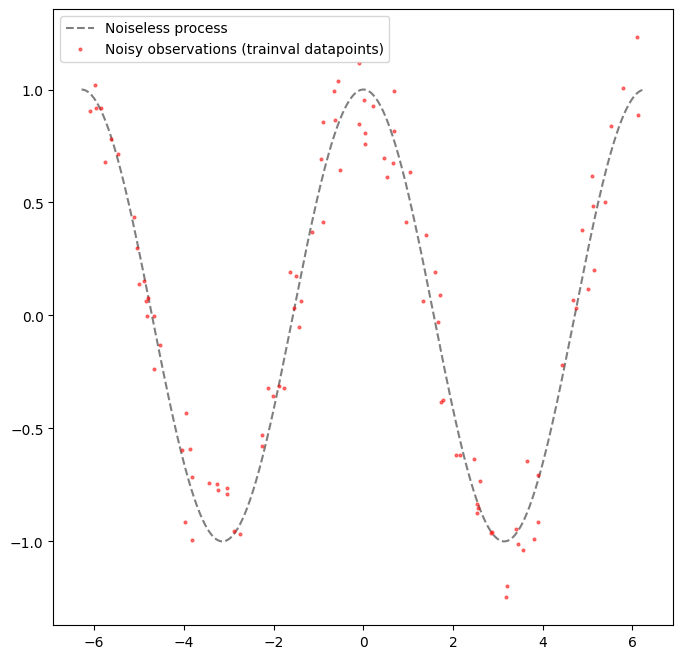
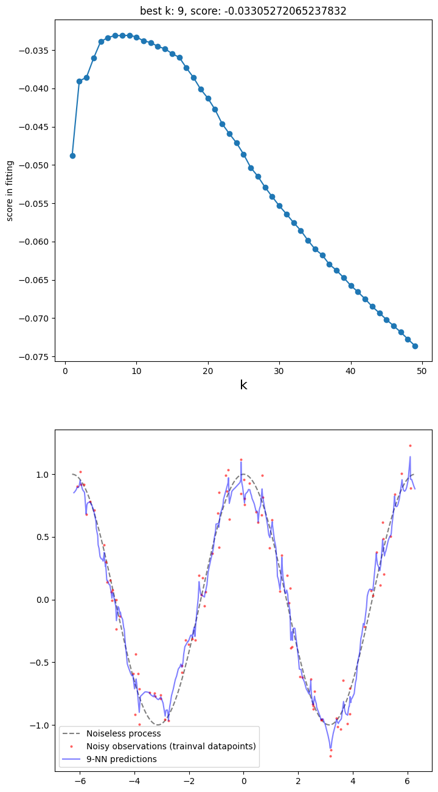
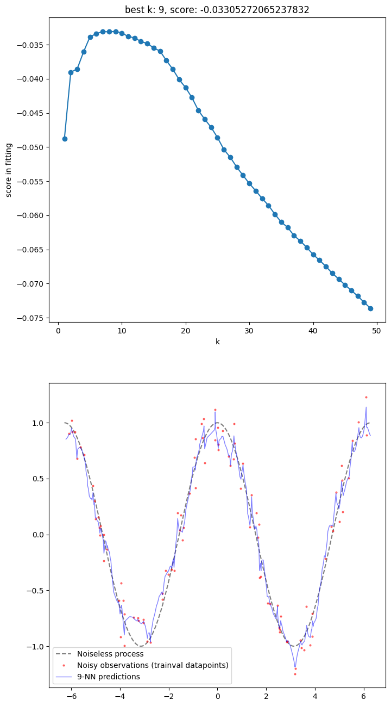
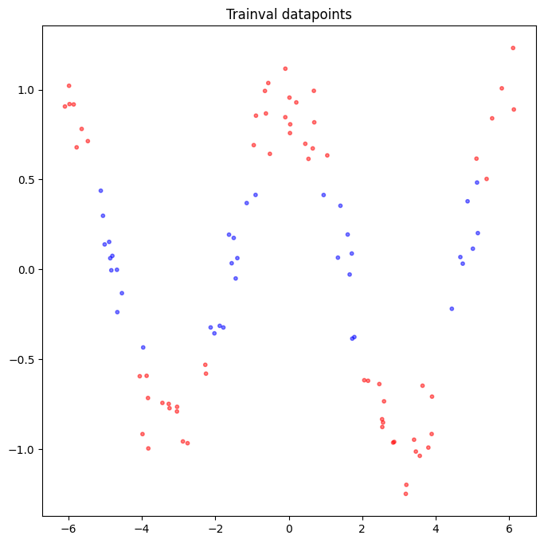
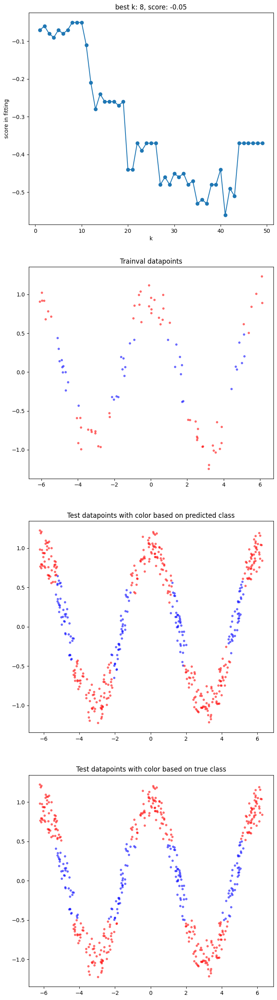

Example kNN regression and classification#
Author: Jyri Kivinen (jyri.kivinen@lapinamk.fi)
Version: 8 September, 2023
Credits: The notebook uses some features of, draws inspiration from, the code presented in https://scikit-learn.org/stable/auto_examples/neighbors/plot_regression.html (page generated 8 September, 2023) and having the code stated licence:
# Author: Alexandre Gramfort <alexandre.gramfort@inria.fr>
# Fabian Pedregosa <fabian.pedregosa@inria.fr>`
#
# License: BSD 3 clause (C) INRIA
Code imports#
import numpy as np
import matplotlib.pyplot as plt
from sklearn.model_selection import KFold, StratifiedKFold
import sys
Nearest neighbor code#
try:
import google.colab
colab_environment = True
except:
colab_environment = False
if colab_environment:
!git clone https://github.com/luma-lapinamk/jyri-mla23.git
sys.path.insert(0, 'jyri-mla23/code')
else:
sys.path.insert(0, '../../code')
from nearest_neighbors import *
if colab_environment:
!pygmentize jyri-mla23/code/nearest_neighbors.py
else:
!pygmentize ../../code/nearest_neighbors.py
import numpy as np
from sklearn.metrics import classification_report, r2_score
class NearestNeighborClassifier:
"""
A basic k-NN classifier
"""
def __init__(self, name='nearest_neighbor_classifier'):
self.name = name
@staticmethod
def calculate_pairwise_datapoint_distances(x_a, x_b):
return np.sqrt(np.sum((x_b-np.reshape(x_a, (1, x_b.shape[1])))**2, axis=1))
@staticmethod
def calculate_neighbor_indices(pairwise_distances, n_neighbors):
return np.argsort(pairwise_distances)[0: n_neighbors]
@staticmethod
def calculate_predicted_class(neighbor_indices, y):
classes, class_counts = np.unique(y[neighbor_indices], return_counts=True)
return classes[np.argmax(class_counts)]
def predict(self, x, y, x_new, n_neighbors):
n_new = x_new.shape[0]
predicted_classes = np.empty((n_new, ), dtype=int)
for ii in np.arange(n_new):
pairwise_distances = self.calculate_pairwise_datapoint_distances(x_new[ii, :], x)
neighbor_indices = self.calculate_neighbor_indices(pairwise_distances, n_neighbors)
predicted_classes[ii] = self.calculate_predicted_class(neighbor_indices, y)
return predicted_classes
def score(self, x, y, x_new, y_new, n_neighbors):
y_new_predicted = self.predict(x, y, x_new, n_neighbors)
return classification_report(y_new, y_new_predicted, output_dict=True)
class NearestNeighborRegressor:
"""
A basic k-NN regressor
"""
def __init__(self, name='nearest_neighbor_regressor'):
self.name = name
@staticmethod
def calculate_pairwise_datapoint_distances(x_a, x_b):
return np.sqrt(np.sum((x_b-np.reshape(x_a, (1, x_b.shape[1])))**2, axis=1))
@staticmethod
def calculate_neighbor_indices(pairwise_distances, n_neighbors):
return np.argsort(pairwise_distances)[0: n_neighbors]
@staticmethod
def calculate_predicted_value(neighbor_indices, y, pairwise_distances, distance_weighting):
if distance_weighting:
neighbor_weights = 1./(pairwise_distances[neighbor_indices]+np.finfo(float).eps)
neighbor_weights *= (1./neighbor_weights.sum())
return np.sum(neighbor_weights*y[neighbor_indices])
else:
return np.mean(y[neighbor_indices]) # equal weights
def predict(self, x, y, x_new, n_neighbors, distance_weighting):
n_new = x_new.shape[0]
predicted_values = np.empty((n_new, ), dtype=float)
for ii in np.arange(n_new):
pairwise_distances = self.calculate_pairwise_datapoint_distances(x_new[ii, :], x)
neighbor_indices = self.calculate_neighbor_indices(pairwise_distances, n_neighbors)
predicted_values[ii] = self.calculate_predicted_value(neighbor_indices, y,
pairwise_distances,
distance_weighting)
return predicted_values
def score(self, x, y, x_new, y_new, n_neighbors, distance_weighting):
y_new_predicted = self.predict(x, y, x_new, n_neighbors, distance_weighting)
return r2_score(y_new, y_new_predicted)
A basic regression example#
Create data#
# helper functions for creating clean and noisy observations
def create_noiseless_process_output(x, process_name='cosine'):
if process_name == 'cosine':
return np.cos(x)
elif process_name == 'logistic_sigmoid':
return 1./(1+np.exp(-x))
def add_noise(y, noise_level, process_name='uniform'):
if process_name == 'uniform':
return y+noise_level*(0.5-np.random.rand(y.size))
elif process_name == 'gaussian':
return y+noise_level*(np.random.randn(y.size))
def create_process_output(x, noise_level, noiseless_process_name='cosine', noise_process_name='uniform'):
y_noiseless = create_noiseless_process_output(x, noiseless_process_name)
y_noisy = add_noise(y_noiseless, noise_level, noise_process_name)
return y_noiseless, y_noisy
# speficications
n_trainval_datapoints = 100
n_test_datapoints = 500
noise_level = 0.5
x_min = -2*np.pi
x_max = 2*np.pi
clean_data_process = 'cosine'
noise_process = 'uniform'
random_number_generator_seed = 42
# set random number generator seed
np.random.seed(random_number_generator_seed)
# create feature values
X = x_min+(x_max-x_min)*np.random.rand(n_trainval_datapoints+n_test_datapoints, 1)
random_indices = np.random.permutation(n_trainval_datapoints+n_test_datapoints)
X_trainval = np.sort(X[random_indices[0: n_trainval_datapoints], :].copy(), axis=0)
X_test = np.sort(X[random_indices[n_trainval_datapoints:], :].copy(), axis=0)
# create clean and noisy observations from the feature values
y_trainval_noiseless, y_trainval = create_process_output(X_trainval.ravel(), noise_level, clean_data_process, noise_process)
y_test_noiseless, y_test = create_process_output(X_test.ravel(), noise_level, clean_data_process, noise_process)
# plot data
fig, ax = plt.subplots(nrows=1, ncols=1, figsize=[8, 8])
ax.plot(np.linspace(x_min, x_max, 1000), create_noiseless_process_output(np.linspace(x_min, x_max, 1000).ravel(), clean_data_process),
'k--', label='Noiseless process', alpha=0.5, markersize=2)
ax.plot(X_trainval, y_trainval, 'ro', label='Noisy observations (trainval datapoints)', alpha=0.5, markersize=2)
ax.legend();

Selecting a value for k#
# instantiate model
kNN = NearestNeighborRegressor()
# leave-one-out cross-validation to choose k
n_neighbors_options = np.arange(1, 50)
distance_weighting = True
scores = np.empty(n_neighbors_options.shape)
for ii, n_neighbors in enumerate(n_neighbors_options):
score = 0.
for jj in np.arange(X_trainval.shape[0]):
train_indices = (np.arange(X_trainval.shape[0]) != jj)
val_indices = ~train_indices
val_prediction = kNN.predict(X_trainval[train_indices, :], y_trainval[train_indices],
X_trainval[val_indices, :], n_neighbors, distance_weighting)
score -= (y_trainval[val_indices]-val_prediction)[0]**2
scores[ii] = score/(jj+1)
y_test_predicted = kNN.predict(X_trainval, y_trainval, X_test, n_neighbors_options[np.argmax(scores)], distance_weighting)
fig, (ax1, ax2) = plt.subplots(nrows=2, ncols=1, figsize=[8, 16])
ax1.plot(n_neighbors_options, scores, 'o-')
ax1.set_xlabel('k', fontsize=16)
ax1.set_ylabel('score in fitting')
ax1.set_title(f'best k: {n_neighbors_options[np.argmax(scores)]}, score: {np.max(scores)}')
ax2.plot(np.linspace(x_min, x_max, 1000), create_noiseless_process_output(np.linspace(x_min, x_max, 1000).ravel(), clean_data_process),
'k--', label='Noiseless process', alpha=0.5, markersize=2)
ax2.plot(X_trainval, y_trainval, 'ro', label='Noisy observations (trainval datapoints)', alpha=0.5, markersize=2)
ax2.plot(X_test, y_test_predicted, 'b-', label=f'{n_neighbors_options[np.argmax(scores)]}-NN predictions', alpha=0.5, markersize=2)
ax2.legend();

Coding: creating a new class that extends the base class with fitting of k#
class MyNearestNeighborRegressor(NearestNeighborRegressor):
def __init__(self, name='my_nearest_neighbor_regressor'):
super().__init__()
self.name = name
self.k = None
self.distance_weighting = None
def my_score(self, x_new, y_new):
return super().score(self.x, self.y, x_new, y_new, self.k, self.distance_weighting)
def my_fit(self, x, y, n_neighbors_options, distance_weighting=True, n_folds_in_cv=None):
# memorize training data
self.x = x
self.y = y
self.distance_weighting = distance_weighting
# choose and store k
scores = np.empty(n_neighbors_options.shape)
if n_folds_in_cv is None: # leave-one-out
for ii, n_neighbors in enumerate(n_neighbors_options):
score = 0.
for jj in np.arange(x.shape[0]):
train_indices = (np.arange(x.shape[0]) != jj)
val_indices = ~train_indices
val_prediction = super().predict(x[train_indices, :], y[train_indices], x[val_indices, :],
n_neighbors, distance_weighting)
score -= (y[val_indices]-val_prediction)[0]**2
scores[ii] = score/(jj+1)
else: # (stratified) cross-validation
kf = KFold(n_splits=n_folds_in_cv)
kf.get_n_splits(x, y)
for ii, n_neighbors in enumerate(n_neighbors_options):
score = 0.
for jj, (train_indices, val_indices) in enumerate(kf.split(x, y)):
score += super().score(x[train_indices, :], y[train_indices], x[val_indices, :], y[val_indices],
n_neighbors, distance_weighting)
scores[ii] = score/(jj+1)
self.k = n_neighbors_options[np.argmax(scores)]
# return stats
return scores
def my_predict(self, x_new):
return super().predict(self.x, self.y, x_new, self.k, self.distance_weighting)
Experimentation with the new code#
# create model instance
my_kNN = MyNearestNeighborRegressor()
# fit model and assess performance
scores = my_kNN.my_fit(X_trainval, y_trainval, n_neighbors_options, True, None)
# plot fitting and prediction results
fig, (ax1, ax2) = plt.subplots(nrows=2, ncols=1, figsize=[8, 16])
ax1.plot(n_neighbors_options, scores, 'o-')
ax1.set_xlabel('k')
ax1.set_ylabel('score in fitting')
ax1.set_title(f'best k: {my_kNN.k}, score: {np.max(scores)}')
ax2.plot(np.linspace(x_min, x_max, 1000), create_noiseless_process_output(np.linspace(x_min, x_max, 1000).ravel(), clean_data_process),
'k--', label='Noiseless process', alpha=0.5, markersize=2)
ax2.plot(X_trainval, y_trainval, 'ro', label='Noisy observations (trainval datapoints)', alpha=0.5, markersize=2)
ax2.plot(X_test, my_kNN.my_predict(X_test), 'b-', label=f'{my_kNN.k}-NN predictions', alpha=0.5, markersize=2, linewidth=1)
ax2.legend();

Classification#
Coding: creating a new class that extends the base class with fitting of k#
class MyNearestNeighborClassifier(NearestNeighborClassifier):
def __init__(self, name='my_nearest_neighbor_classifier'):
super().__init__()
self.name = name
self.k = None
def my_score(self, x_new, y_new):
return super().score(self.x, self.y, x_new, y_new, self.k)
def my_fit(self, x, y, n_neighbors_options, n_folds_in_cv=None, fit_criteria='accuracy'):
# memorize training data
self.x = x
self.y = y
# choose and store k
scores = np.empty(n_neighbors_options.shape)
if n_folds_in_cv is None: # leave-one-out
for ii, n_neighbors in enumerate(n_neighbors_options):
score = 0.
for jj in np.arange(x.shape[0]):
train_indices = (np.arange(x.shape[0]) != jj)
val_indices = ~train_indices
val_prediction = super().predict(x[train_indices, :], y[train_indices], x[val_indices, :], n_neighbors)
score -= (y[val_indices]-val_prediction)[0]**2
scores[ii] = score/(jj+1)
else: # (stratified) cross-validation
skf = StratifiedKFold(n_splits=n_folds_in_cv)
skf.get_n_splits(x, y)
for ii, n_neighbors in enumerate(n_neighbors_options):
score = 0.
for jj, (train_indices, val_indices) in enumerate(skf.split(x, y)):
score += super().score(x[train_indices, :], y[train_indices], x[val_indices, :], y[val_indices], n_neighbors)[fit_criteria]
scores[ii] = score/(jj+1)
self.k = n_neighbors_options[np.argmax(scores)]
# return stats
return scores
def my_predict(self, x_new):
return super().predict(self.x, self.y, x_new, self.k)
Data#
Utilize the above data, so that the datapoints serve as features.
# a helper function to create labels
def create_labels(xy, clean_data_process_name):
if clean_data_process_name == 'cosine':
return np.logical_and(xy[:, 1]>=-0.5, xy[:, 1]<=0.5).astype(int)
elif clean_data_process_name == 'logistic_sigmoid':
return (xy[:, 1]>=0.5, xy[:, 1]).astype(int)
# create data
X_trainval = np.concatenate((X_trainval, y_trainval[:, np.newaxis]), axis=1)
X_test = np.concatenate((X_test, y_test[:, np.newaxis]), axis=1)
y_trainval = create_labels(X_trainval, clean_data_process)
y_test = create_labels(X_test, clean_data_process)
# plot data
class_colors = np.array([[1., 0., 0.], [0., 0., 1.]])
fig, ax = plt.subplots(nrows=1, ncols=1, figsize=[8, 8])
plt.scatter(X_trainval[:, 0], X_trainval[:, 1], c=class_colors[y_trainval, :], alpha=0.5, s=10)
plt.title('Trainval datapoints');

Experiments#
# create model instance
my_kNN = MyNearestNeighborClassifier()
# fit model and assess performance
scores = my_kNN.my_fit(X_trainval, y_trainval, n_neighbors_options)
# plot fitting and prediction results
fig, (ax1, ax2, ax3, ax4) = plt.subplots(nrows=4, ncols=1, figsize=[8, 32])
ax1.plot(n_neighbors_options, scores, 'o-')
ax1.set_xlabel('k')
ax1.set_ylabel('score in fitting')
ax1.set_title(f'best k: {my_kNN.k}, score: {np.max(scores)}')
ax2.scatter(X_trainval[:, 0], X_trainval[:, 1], c=class_colors[y_trainval, :], alpha=0.5, s=10)
ax2.set_title('Trainval datapoints')
ax3.scatter(X_test[:, 0], X_test[:, 1], c=class_colors[my_kNN.my_predict(X_test), :],
alpha=0.5, s=10, label=f'{my_kNN.k}-NN predictions')
ax3.set_title('Test datapoints with color based on predicted class')
ax4.scatter(X_test[:, 0], X_test[:, 1], c=class_colors[y_test, :], alpha=0.5, s=10)
ax4.set_title('Test datapoints with color based on true class');
